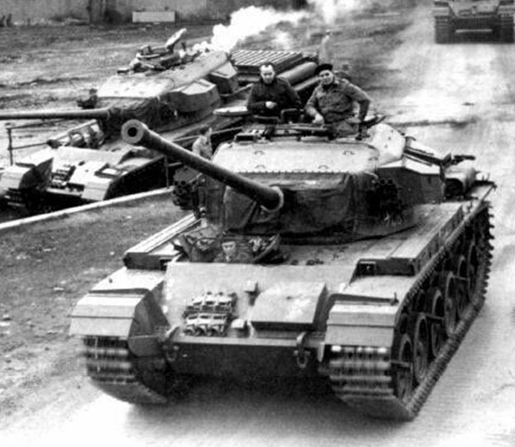

A41 Centurion
Za najlepszy czołg II wojny światowej można uznać czołg, który podobnie jak T-44 nie wziął udziału w walkach. Brytyjski A41 Centurion powstał w 1944 roku, a do służby wszedł w maju 1945 roku. Pierwsze wozy pojawiły się w Niemczech kilka dni po zakończeniu wojny i wykorzystano je jedynie do prób.
Prace nad Centurionem ruszyły w 1943 roku i były prowadzone równolegle z czołgiem A34 Comet. Chociaż Comet wziął udział w walkach w 1945 roku i był bardzo podobny do Centuriona, ustępował mu pod względem pancerza i potencjału modernizacyjnego.


Ostatnia aktualizacja: 17.11.2019